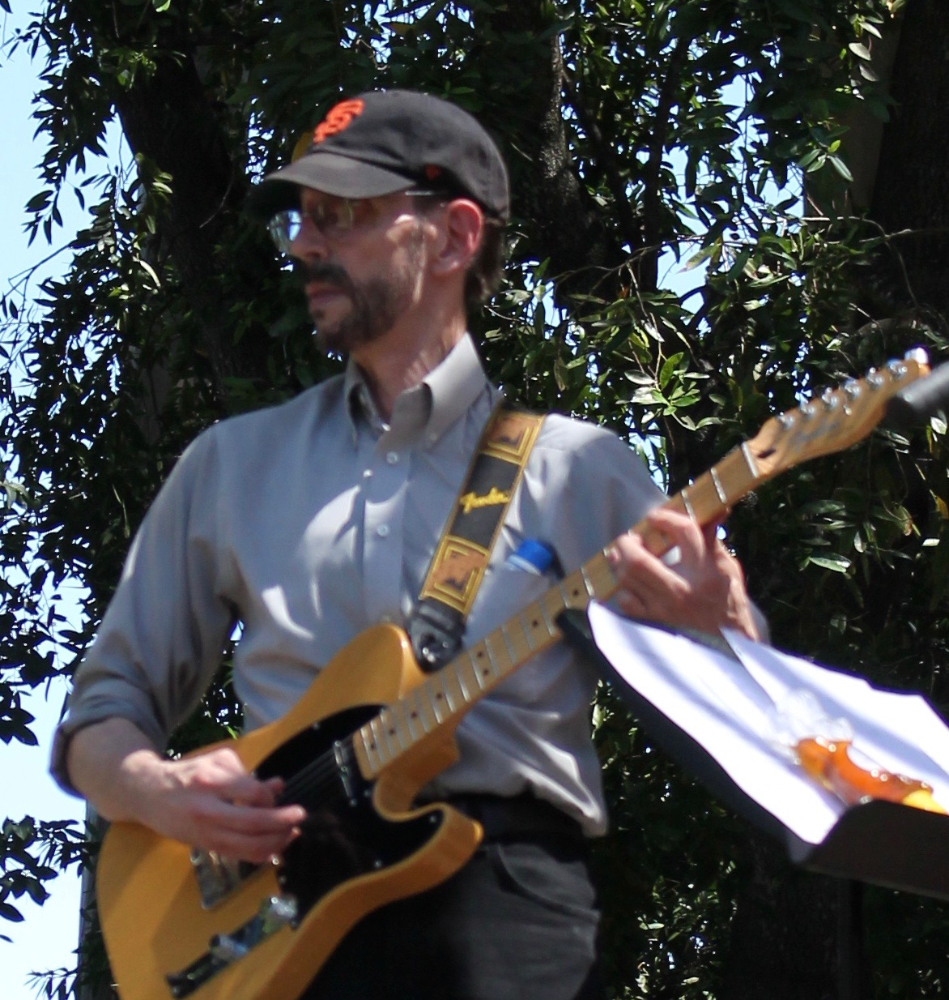

Music
About
Meet the members of the Smokin Slice of Mojo

Vocals
Jerome Harris
I have been singing all my life. When I was a young child, in the early 60s, my grandmother noticed I had the ability to sing songs note for note. In the early 70s, I began singing gospel at our church in San Francisco. Then I started an a cappella group, singing in the hallways of my high school. After high school, I enlisted in the US Navy and while on the USS Constellation I started another singing group called 2+2 Revue. We performed throughout the Western Pacific, including Japan, Hawaii, and the Philippines.
When I returned home, I sang for Bigcat Productions, in Richmond, California, as a solo act. I did that for a while, but the music genre was changing, and in the late 80s, I decided to return back to what I knew and loved, which was singing gospel music. I then joined This Music Matters Ministries as a lead and backup singer.
I have been in many bands and groups since then, and it has been a pleasure singing with them all. In 2013, I sang the national anthem at an Oakland A's home game, it was the experience of a lifetime.
The Smokin' Slice of Mojo band is a new experience for me, we play timeless cover songs from the 60s, 70s, and 80s. With this band I have I have the pleasure of working with some great musicians, so the sky's the limit!
My hope is that when you come out to see this amazing band you will be filled with happiness and we will bring back some of the joyful moments of your lifetime.

Drums
Dave Gomez
David Gomez: drummer, vocals (backing and lead), prankster, and grumpy old man. I'm married, have two kids, and have taught U.S. History at Carlmont High School for nearly 30 years.
Got my first professional gig when I was 17 ($60), playing for a party with a Mexican polka band. Now I'm in my fifties and have played in 25 bands, ranging from heavy metal to gospel, Motown to "cool pop".
Now (half a lifetime and 50 pounds later) I am a drummer and vocalist for Fractured Hans and sub-drummer for Janel & the Heist, and of course, a drummer and vocalist for Jerome and the Smokin' Slice of Mojo.
More than a decade ago, and many times since, I told Jerome Harris that if he needed a drummer for anything he wanted to do, and he wanted me, I would be there. We have seen some musicians come and go, but our current line-up seems to finally fulfill our vision of what a rockin' soul-infused cover ban should be.
Stay tuned as we continue to develop and periodically erupt all over the San Francisco Bay Area and beyond!
Bass
Fireman Dave
I have a passion for music and instruments, particularly stringed instruments. Like many kids, I started learning to play guitar in high school.
I never played in a band, or with others for that matter, until a few years ago when a new family moved into the neighborhood. Seeing my new neighbor playing guitar and singing with his band got me inspired to pick it up again. He encouraged me to look for a band to play with, and even scoured Craigslist ads until he found a good fit for me.
I played with two other bands before joining Smokin' Slice of Mojo, and I've never had more fun!
When I am not learning a new bass line, or practicing a vocal harmony, you might find me under the hood of a classic car, or making improvements to my home. I retired from the fire department after 31 years. I am married to my lovely wife Lori and we have two great kids, Brianna and Marissa.
Keyboards and "Horns"
Jeff Silberman
Jeff Silberman on keyboards has well over 20 years of semi-professional playing and recording experience in a variety of musical genres. Prior to playing with Smokin' Slice of Mojo, Jeff played with the Lemmings, The Del Mars, Will Scarlett, and Gail Muldrow.
Jeff has also played with esteemed Berkeley High School Jazz alumni Peter Apfelbaum, Will Bernard, Stacy Starkweather, and Steven Berstein ... while still in diapers.
Ironically, Jeff leads the Funk-tastic Smokin' Mojo Hollywood horn section, while having absolutely no training as a brass musician whatsoever!

Guitar
Detroit Rich
It all started in 1964 with the Beatles. They inspired me to learn how to play the guitar, drums, and piano.
I played in my first band in '68 with some school friends, mostly just instrumental songs. Throughout the 70's and 80's I played in a punk rock band, the Whoremones. Then in the 80's and 90's I played L/R guitar in a rock band, The New Nobodys. In 2008, I played bass guitar for The Refugees, a Tom Petty tribute band.
In 2009 I met Dave Musso and we formed a rock group called The Time Slips, we played together through 2015. Then in 2015 I was asked to audition for what was to become Smokin' Slice of Mojo. I am still playing with the group, so I guess I passed the audition...
Vocals
Cindy Shusterman
Cindy Shusterman has been singing with the Smokin' Slice of Mojo Band since September of 2016. Although she has been singing in church and school choirs since she could talk, this is the first band she has joined.
A musical theater buff and former theater kid, she loves being on stage and performing in front of a crowd, now matter how tiny!
Cindy was born and raised in Chattanooga, Tennessee, and attended college in Birmingham, Alabama. She move to San Francisco in 2004 and began teaching high school English in 2006. Currently, she teaches juniors and seniors at Carlmont High School, and resides in the Outer Sunset area of San Francisco.
Contact
We cannot wait to turn your party into a Sizzlin’ Pan-Fried Sweaty Category 5-Z hurricane that simply cannot be stopped!
´ Call/Email us today!